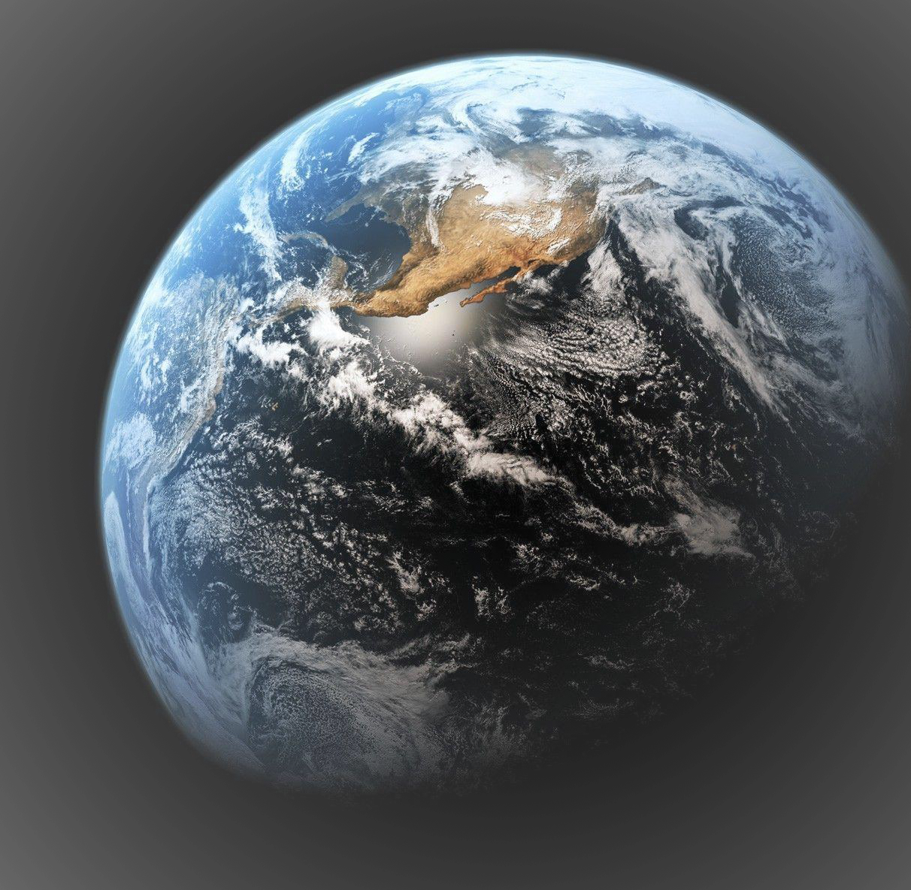

Earth

Third planet from the Sun and the only known planet to harbor life. About 29.2% of Earth's surface is land with remaining 70.8% is covered with water. Earth's distance from the Sun, physical properties and geological history have allowed life to evolve and thrive.
Earth's interior, like that of the other terrestrial planets, is divided into layers by their chemical or physical (rheological) properties. The outer layer is a chemically distinct silicate solid crust, which is underlain by a highly viscous solid mantle.
The thickness of the crust varies from about 6 kilometers (3.7 mi) under the oceans to 30–50 km (19–31 mi) for the continents. The crust and the cold, rigid, top of the upper mantle are collectively known as the lithosphere, which is divided into independently moving tectonic plates.
Beneath the lithosphere is the asthenosphere, a relatively low-viscosity layer on which the lithosphere rides. Important changes in crystal structure within the mantle occur at 410 and 660 km (250 and 410 mi) below the surface, spanning a transition zone that separates the upper and lower mantle. Beneath the mantle, an extremely low viscosity liquid outer core lies above a solid inner core. Earth's inner core may be rotating at a slightly higher angular velocity than the remainder of the planet, advancing by 0.1–0.5° per year, although both somewhat higher and much lower rates have also been proposed. The radius of the inner core is about one-fifth of that of Earth. Density increases with depth, as described in the table on the right.
The total surface area of Earth is about 510 million km2. The continental crust consists of lower density material such as the igneous rocks granite and andesite. Less common is basalt, a denser volcanic rock that is the primary constituent of the ocean floors.
| Mass | 5.972×1024 kg |
|---|---|
| Rotation Period | 1 Earth Days |
| Surface Gravity | 9.8 m/s2 |
| Volume | 1.083×1012 km3 |